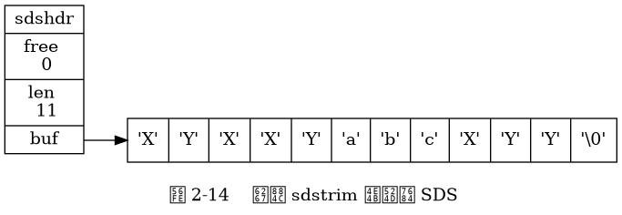

第 2 章《简单动态字符串》勘误¶
14 页¶
《惰性空间释放》一节对 sdstrim 函数作用的描述有误，
正确的描述应该为：
举个例子，
sdstrim函数接受一个 SDS 和一个 C 字符串作为参数， 从 SDS 左右两端分别移除所有在 C 字符串中出现过的字符。
其中加粗部分为改正后的内容。
因为这个错误， 图 2-14 也要进行相应的改正， 以下是改正后的图 2-14 。

感谢 xiaolou 反馈这个错误。
17 页¶
表 2-2 中给出的 sdsfree 函数的复杂度有误，
它的复杂度应该是 O(1) 才对，
以下是修正后的内容：
函数 |
作用 |
时间复杂度 |
|---|---|---|
|
释放给定的 SDS 。 |
O(1) |
感谢 Timothy Qiu 反馈这个问题。
18 页¶
表 2-2 中对 sdstrim 的描述和时间复杂度都有误，
以下是修正后的内容：
函数 |
作用 |
时间复杂度 |
|---|---|---|
|
接受一个 SDS 和一个 C 字符串作为参数， 从 SDS 左右两端分别移除所有在 C 字符串中出现过的字符。 |
O(M*N) ， |
感谢 xiaolou 、袁文清 反馈这个错误。